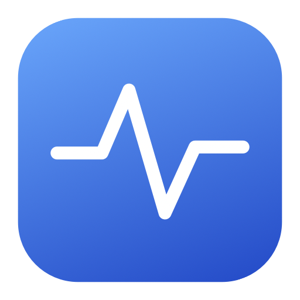

让下载安心完成。
文件还没下完，计算还没结束？保持系统唤醒，屏幕仍然可以熄灭。

MacBeat小小的工具，多一点从容。
还没下完的文件、正在进行的计算、运行中的本地服务。暂时离开，让 Mac 把手头的事做完。
免费下载，无需账户，无需订阅。
系统保持唤醒，屏幕可以正常熄灭。
再给手头的事一点时间。
到点就结束，不用惦记着。
持续运行，直到你手动停止。
功能交互演示 · 原生 Mac 应用目前为中文界面
为暂时离开的片刻而做
一个小小的菜单栏伙伴，照看那些还需要一点时间的任务。
文件还没下完，计算还没结束？保持系统唤醒，屏幕仍然可以熄灭。
需要时开启合盖运行。把 Mac 放在通风的桌面上，让它继续处理任务。
再运行 30 分钟、1 小时或 2 小时，指定日期与时间，或者由你手动停止。
按你的节奏
短暂离开，或让任务运行到第二天。选择适合自己的结束方式，到时交还系统正常的睡眠策略。
选好时长，继续去忙你的事。
直接选择本地日期和时间，支持跨天。
持续运行，直到手动停止或触发保护条件。
选择仅接电运行，或允许使用电池。低电量阈值与温度保护，会在达到条件时结束会话。
真实合盖，独立观察
在一次 Apple 芯片 MacBook Pro 的实机测试中，MacBeat 在电池供电、盖子关闭的状态下持续运行。独立观察程序每秒记录，没有中断。
查看实测与兼容性说明 ↗连续合盖
检测到的休眠
2026 年 10 月 5 日 · macOS 27.0（26A428）。这验证了一个具体配置，不代表覆盖全部 Mac 与系统版本。合盖控制使用非公开 IOKit 接口，系统更新可能改变其行为。
现在开始
打开 DMG，将 MacBeat 拖入 Applications。
打开 MacBeat，在菜单栏找到图标。它不会出现在 Dock 里。
确认电源设置，选择结束方式，点击开启。绿色代表运行中。
你可能想知道
可以。在设置中开启“每日定时”，选择自动开启和关闭时间并保存，支持跨午夜。需要 MacBeat 正在运行，不能唤醒已休眠或关机的电脑。在尚未执行的时段内唤醒，会补开到结束时间；停止或失败后，本次时段不再重试。已有手动会话时，会跳过本次定时。
不会。MacBeat 保持系统唤醒，屏幕仍可正常熄灭。屏幕变黑本身不代表任务已经停止。
目前提供 Apple 芯片版本，最低构建目标为 macOS 13。合盖运行已在一台 MacBook Pro 的具体配置上实测；其他系统和配置仍需验证，暂未发布 Intel 安装包。
MacBeat 不执行 pmset disablesleep，也不写入持久电源设置。会话使用临时请求，并配有辅助与恢复进程。合盖控制涉及共享系统状态，请避免同时运行多个合盖控制工具。
MacBeat 会释放自己的保持请求，让系统恢复正常的睡眠策略，不会强制电脑立即睡眠。
原本以为这类需求已经有成熟应用能满足。试过之后，还是想要一个更贴合自己习惯的工具：轻巧地待在菜单栏，清楚地设定结束时间，合盖是否有效也能亲自验证。于是，我们自己做了 MacBeat。
让 Mac 把手头的事做完，你可以暂时离开。
下载 Mac 版